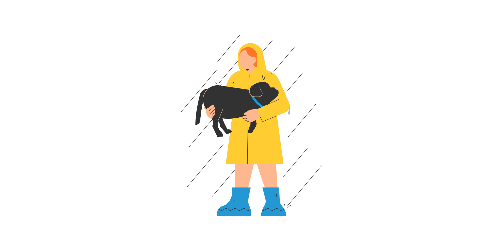
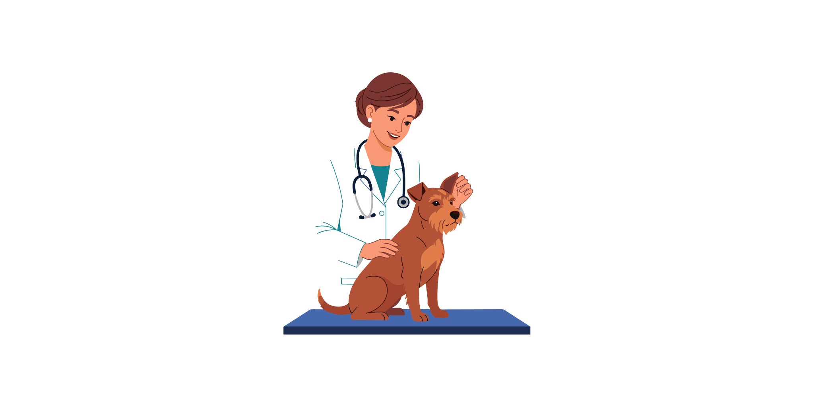
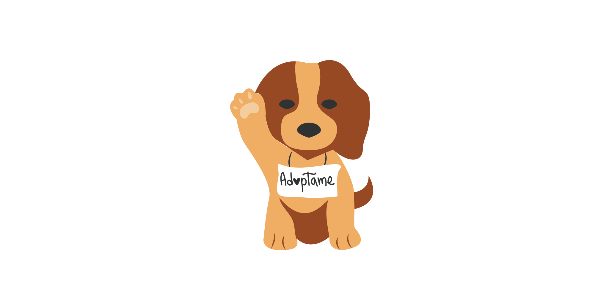

Quem Somos
A PetLar nasceu com o propósito de transformar a vida de animais abandonados, conectando pets carentes com famílias cheias de amor. Trabalhamos diariamente para garantir que cada animal receba cuidados, carinho e uma nova chance.
Nossa Missão
Promover adoções responsáveis, incentivar o bem-estar animal e conscientizar a sociedade sobre a importância do respeito e cuidado com os animais.
Como Ajudamos

Resgate
Resgatamos animais em situação de abandono e risco.

Cuidados
Garantimos tratamento veterinário e muito carinho.

Adoção
Promovemos adoções seguras e responsáveis.